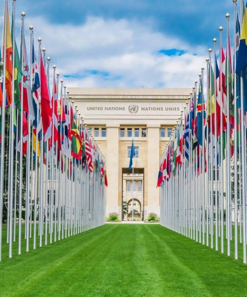
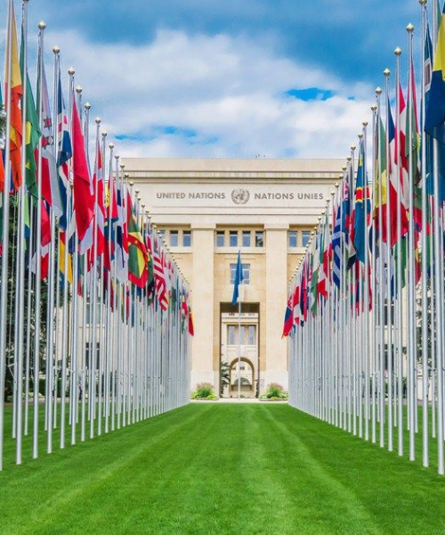
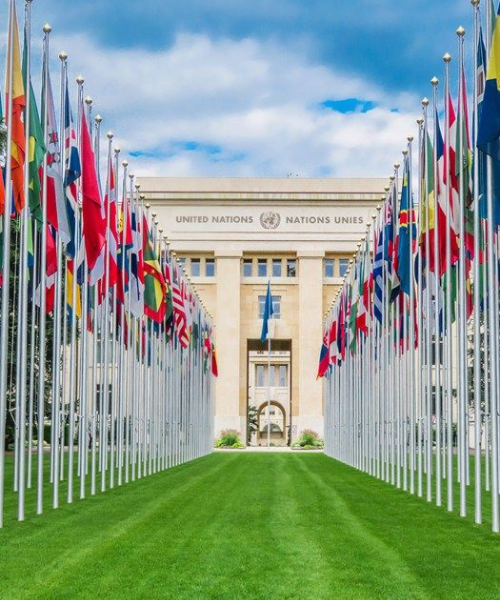
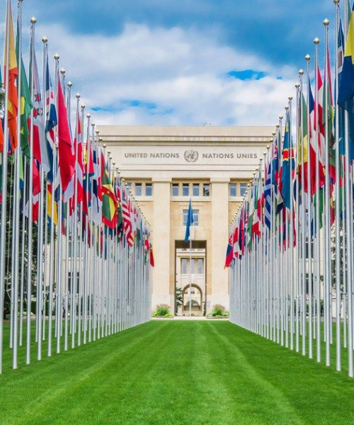

Kerjasama multilateral berbeda dengan kerjasama bilateral biasanya melibatkan 3 atau lebih negara dan bersifat lebih internasional tidak sesuai dengan kawasan tertentu seperti kerjasama regional, kerjasama ini biasanya di fasilitasi oleh organisasi internasional seperti perserikatan bangsa bangsa (PBB), organisasi perdagangan dunia/world trade center (WTO), atau bank dunia.
Kerjasama ini biasanya di jalin untuk mengatasi isu yang bersifat internasional seperti perdagangan internasional, perubahan iklim, dll. Indonesia sendiri berperan di berbagai kerjasama multilateral, indonesia aktif di dalam organisasi organisasi seperti PBB, G20, WTO, dan masih banyak lagi, sebagai anggota organisasi ini indonesia aktif mendukung inisiatif energi bersih dan transformasi digital di negara berkembang. Contoh kerjasama multilateral lain adalah perjanjian paris atau paris agreement dimana semua negara di dunia bergabung dan menyetujui sebuah perjanjian atau agreement untuk menjaga iklim dunia